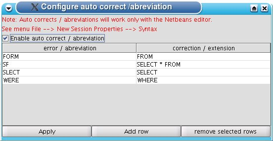

The Syntax plugin is responsible for highlighting SQL code. The colors may be configured in the 'New Session Dialog'.
The plugin adds the Find and Replace functions to SQuirreL's editor and it allows to define auto corrects and abbreviations. To configure auto corrects and abbreviations open the tools popup via ctrl + t and choose the 'autocorr' function.

